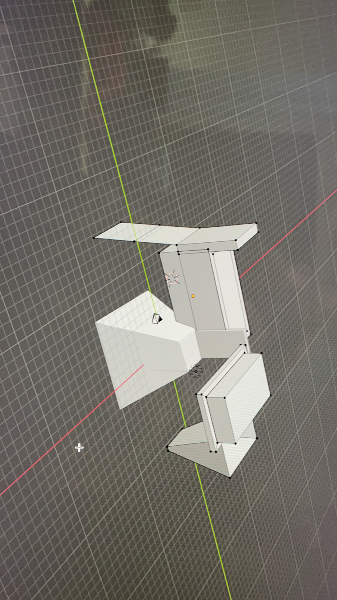
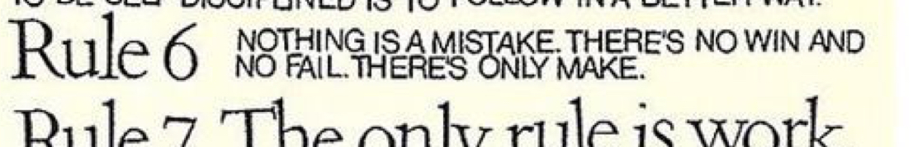
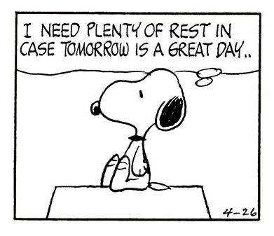
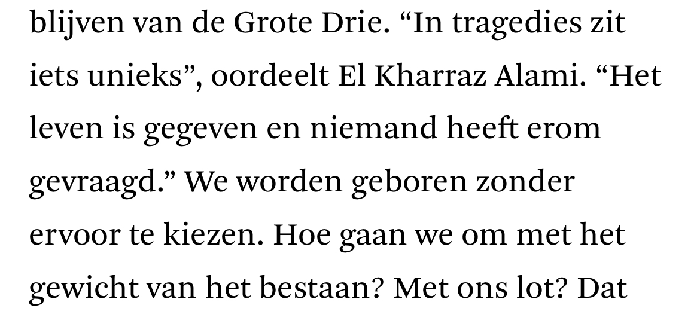
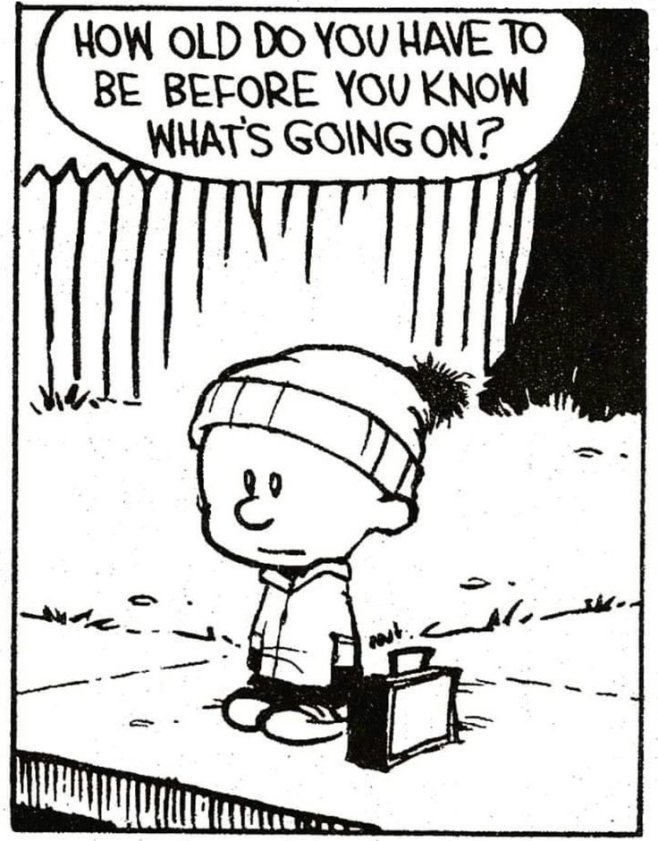
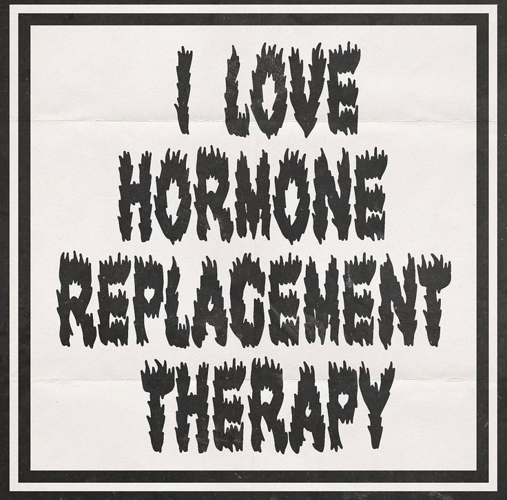
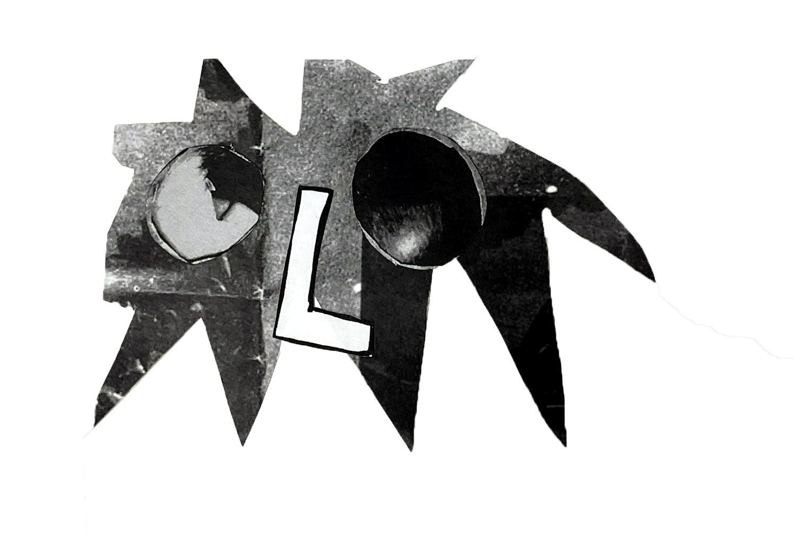

- things i want to do now ive gotten top surgery & started hrt
- climbing/bouldering
- karaoke
- swimming
- horsebackriding (english & maybe western as well)
- climb a tree
- walk around shirtless
- go out in just a shirt, without a hoodie
- have my dad teach me how to shave
- talk to random people
- become more involved in my local queer scene


- to have a home
- a couch facing a window
- lots of windows
- drawings taped to the wall and fridge
- fun tiles on the kitchen wall
- cupboards and shelves filled with books and board games
- lots of small lights
- an empty wall (or a white blanket over a wall) & a small movie projector
- lots of pillows and blankets
- good forks
- cups made by my aunt



- skills i wish i had
- accordion
- piano (kinda can do this already, but wish i was better & had more time to practice)
- acrylic paint
- dancing (i did contemporary in school for like a year or so and i did enjoy it!)
- cooking
- images from my "shit i want on a tshirt" pinterest board


- favorite picturebooks (now and when i was a kid)
- the skull - jon klassen
- literally anything by annie m. g. schmidt (often illustrated by fiep westendorp or, more recently noëlle smit)
- hoe oma almaar kleiner werd - michael de cock, kristien aertssen
- de gouden kooi - anna castagnoli, carll cneut
- sidewalk flowers - jonarno lawson, sydney smith
- shadow - suzy lee
- een drukke dag voor de warenhuismuisjes - thaïs vanderheyden
- kwijt weg foetsie - jort van der jagt, lisa boersen

picture taken in bruges.
something weirdly poetic about this. there was an article a while ago about tourists taking loose bricks home as a souvenir. this brick was taken out of its spot, and placed a bit further away. close enough to home, but not a part of it. the hole is filled with dust and leaves. the brick will never completely fit in again.- site to do
- add images to the monthly overview pages
- link garden/wikipedia page of wikipedia pages
- put stuff in my portfolio pages
- ummm cleaning up some things
- currently working on a page of things im inexplicably attached to & musical shrine
- maybe a landing page? or more info on the homepage?
- tattoos
not even sure i want a tattoo but i think these would be fun to have. probably only on my legs tho, easier to get a job in education that way lol



- fav fanfics (yes all of them are marauders era)
- just lovers (like we were supposed to be) - bizarrestars
mainly jegulus, but also wolfstar, rosekiller, marylily, dorlene - intermission - bizarrestars
mainly rosekiller (ace rep!!!! woo) - alice, look at me - rollercoasterwords
narcissa x alice - text talk by merlywhirls
wolfstar - like real people do by third_crow
wolfstar
